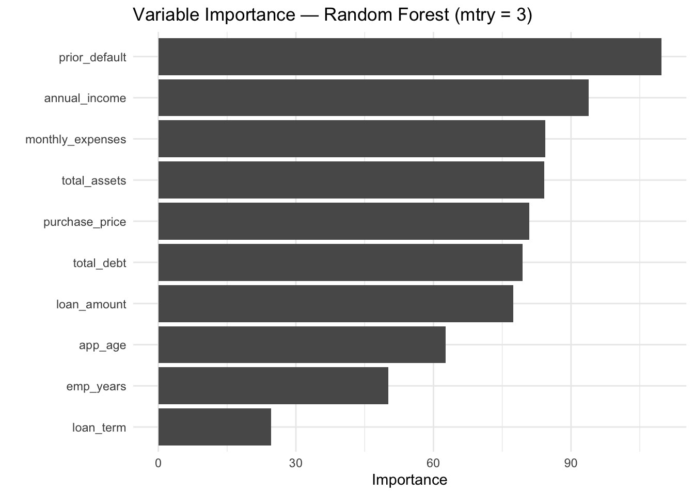
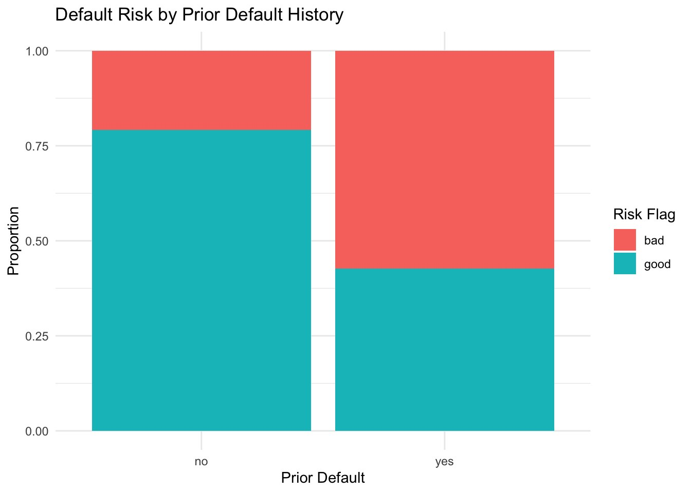

Predicting loan default risk
- The business problem
- A lender wants to approve good borrowers and catch risky ones before they default. About 27.5% of the 3,357 complete applications were bad risks, so a model that simply approves everyone is already 72.5% accurate. Any real model has to beat that.
- What I did
- Explored income, prior defaults and debt-to-income ratio against risk.
- Trained a baseline, a decision tree, logistic regression and two random forests on an 80/20 split, then compared accuracy, sensitivity and specificity.
- Ran a second set of regression models to predict loan size.
- Wrote underwriting recommendations and dug into the applicants the best model got wrong.
- Challenges
- The random forests looked best on training data (96%+ accuracy) but fell to about 73% on new data, a textbook case of overfitting. Every model still missed about 70% of bad-risk applicants, so I had to argue that accuracy alone was the wrong yardstick.
- What I built
- A full Quarto report with code, charts, summary tables and variable-importance plots from two models.
- Business value
- Logistic regression generalized best (74.3% test accuracy, with only a 1.7-point train/test gap). Prior default history was the strongest signal across every model, which became my first recommendation: treat a prior default as a near-disqualifying flag and add income tiers and a debt-to-income cap to underwriting.

